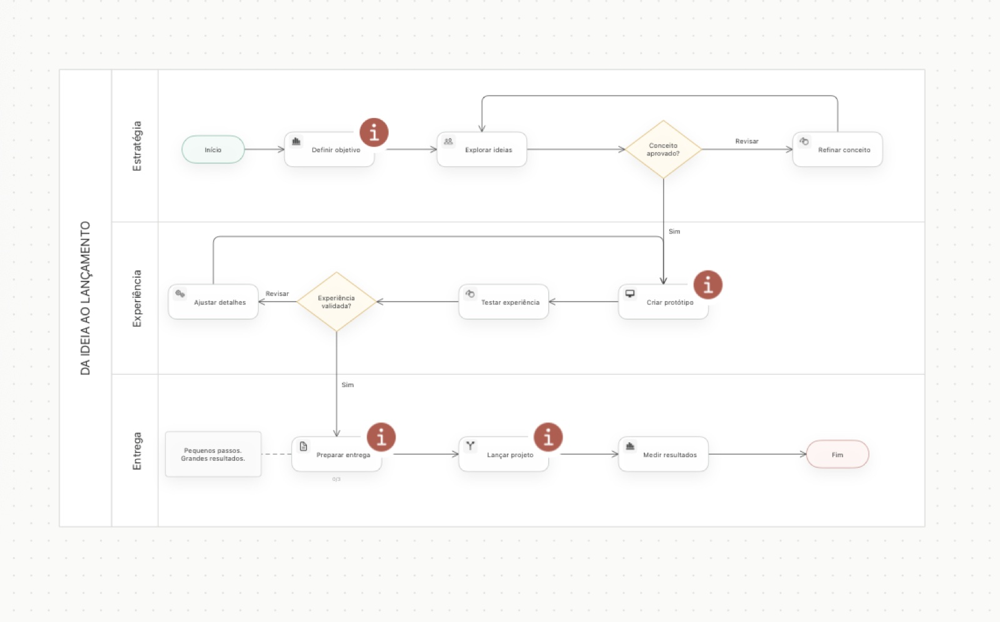
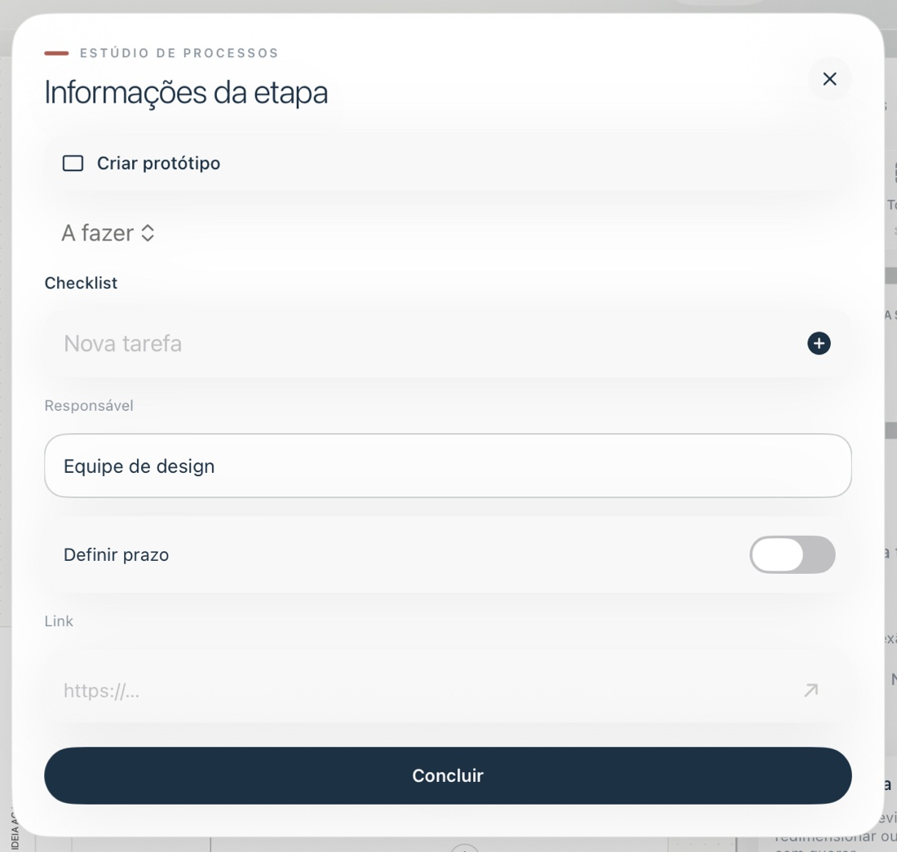
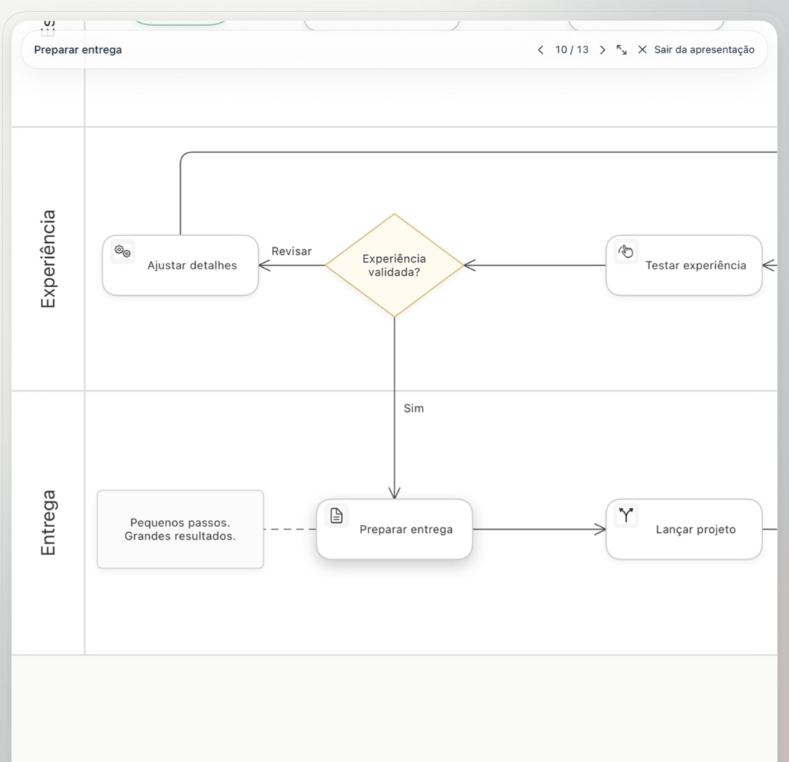

Conecte o raciocínio
Etapas, decisões, início e fim. Dê a cada parte do processo o seu lugar.
CLAREZA EM CADA CONEXÃO
Dê direção às suas ideias. Conecte etapas, explore possibilidades e transforme o complexo em um próximo passo claro.
Feito para iPad. Espaço para o seu jeito de pensar.
01 / ESPAÇO PARA AS IDEIAS
De um plano simples a um processo com várias equipes. Uma tela aberta para pensar, organizar e seguir em frente.

Etapas, decisões, início e fim. Dê a cada parte do processo o seu lugar.
Separe equipes ou responsabilidades sem perder a visão do conjunto.
Mova formas, ajuste conexões e reorganize enquanto a ideia evolui.
02 / ALÉM DO DESENHO
Guarde os detalhes onde eles fazem sentido: junto do que precisa ser feito.
Listas de tarefas para dividir uma atividade em ações menores.
Responsáveis, prazos e links para dar contexto ao processo.
Vincule outro diagrama para detalhar um subprocesso.

Tudo no seu lugar. Até os detalhes.
UMA ETAPA POR VEZ03 / COMPARTILHE O RACIOCÍNIO
Apresente o processo sem as ferramentas no caminho. Conduza a atenção, etapa por etapa, com transições suaves.
Comece por uma forma selecionada e avance pelo processo. Você define o ritmo.
SEU ESPAÇO, DO SEU JEITO
Pastas, favoritos e modelos reutilizáveis para continuar de onde parou.
Escolha a aparência que prefere ou acompanhe o ajuste do dispositivo.
Exporte em PNG, PDF ou SVG. Compartilhe arquivos editáveis e mantenha backups da biblioteca.
Diagramas salvos localmente. Sem precisar criar uma conta para começar.
MAIS ALGUMAS RESPOSTAS
Fluxogramas de processos de trabalho, planejamento de projetos, caminhos de decisão e ideias que você quer organizar visualmente. Comece com uma sequência simples e detalhe conforme precisar.
No armazenamento local do app, no seu dispositivo. Use a exportação de arquivos editáveis e o backup completo da biblioteca para manter uma cópia separada. O Fluxo Studio não oferece sincronização automática em nuvem.
Sim. Exporte em PNG, PDF ou SVG para visualizar fora do Fluxo Studio. Para continuar editando no Fluxo Studio, compartilhe o arquivo editável do diagrama.
Baixe o diagrama de exemplo, salve no app Arquivos e use a opção de importação no menu do editor. O exemplo é fictício e pode ser editado.
GRANDES IDEIAS. NOVOS CAMINHOS.